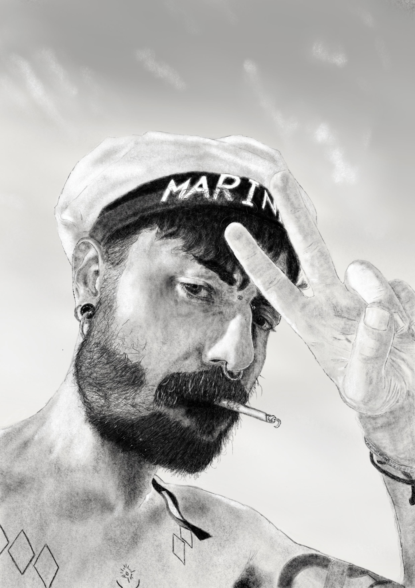
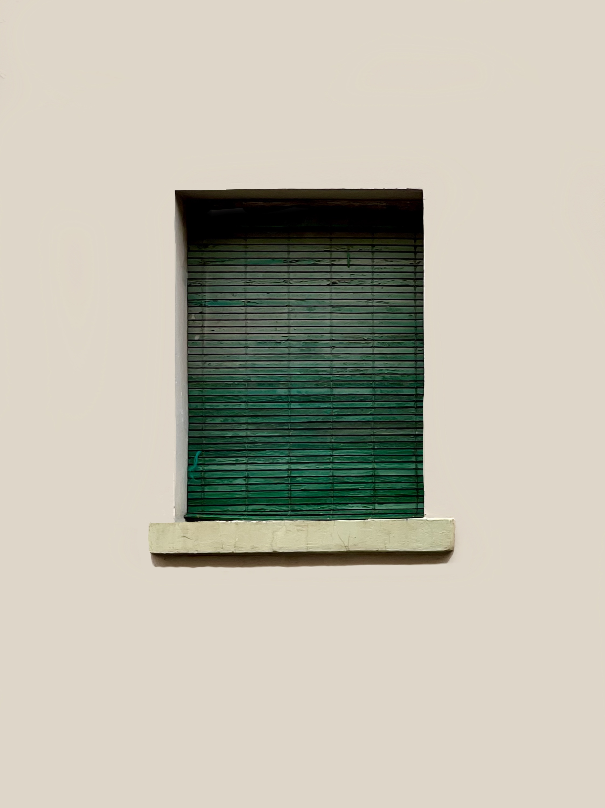
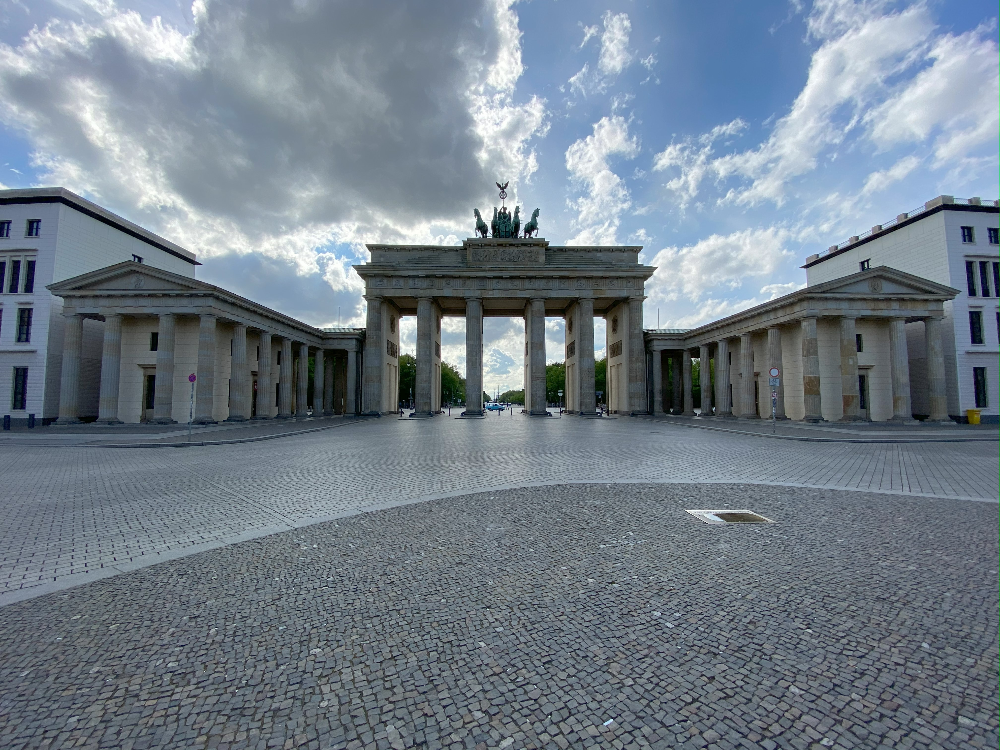

Cancion de mi momento

Dibujo
Como Hobby realizo retratos a carboncillo en digital.
Remo
No hace mucho que relizo remo como deporte, pero me ha enseñado lo importante que es trabajar en equipo.

Fotografía
La fotografia me da alas para ser creativo y mostrar lo extraordinario de lo simple.

Berlin
Después de 8 años en Berlin uno solo puede ser resiliente.